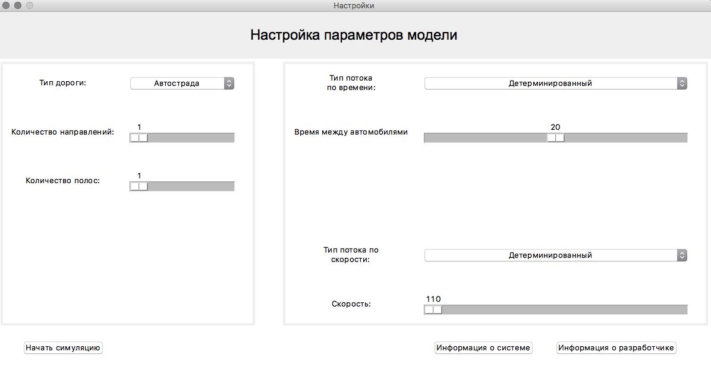
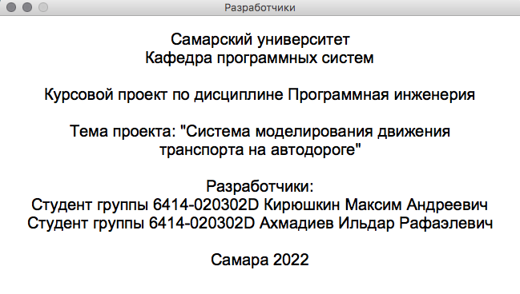
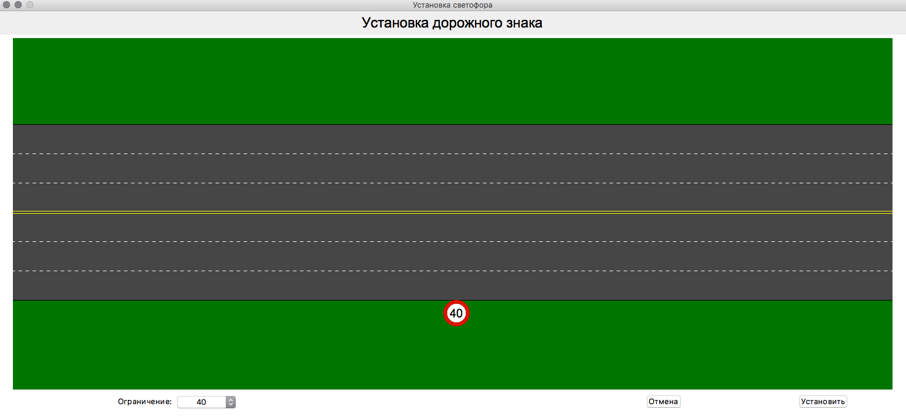
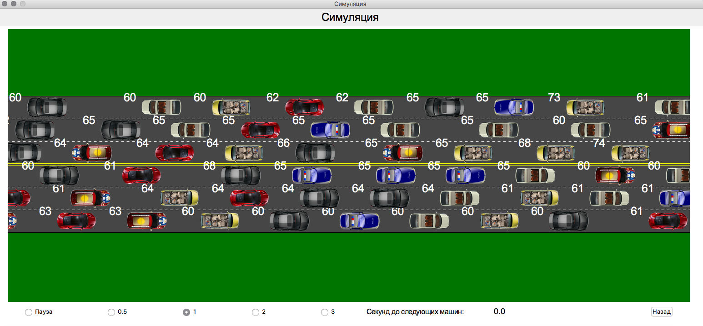
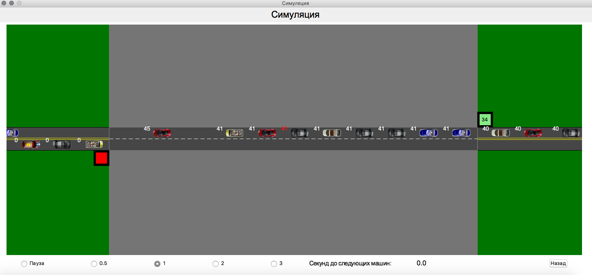
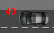

Система моделирования транспорта на автодороге будет использоваться для работы с моделью автопотока на различных типах дорог.
Программная система совместима с операционными системами Windows 7, Windows 10 и macOS.
Основными функциями системы являются:
При запуске программы появляется окно настроек модели
Здесь с помощью контекстных меню и слайдеров можно задать необходимые настройки дороги и транспортного потока. Меню выполнено динамически - в зависимости от выбранных настроек пользователю будет предложено выбрать те или иные настройки.
При выбранном типе дороги "Автострада" пользователь может выбрать количество направлений движения и количество полос в каждом из направлений.
При выбранном типе дороги "Шоссе" пользователь может выбрать количество направлений движения и количество полос в каждом из направлений, а также установить знак ограничения скорости (путем нажатия на кнопку "Установить знак"). Описание интерфейса установки знака представлено ниже
При выбранном типе дороги "Тоннель" пользователь может выбрать длину зеленой светофорной фазы.
При выбранном типе потока "Детерминированный" пользователь может выбрать время между появлением автомобилей.
При выбранном типе потока "Случайный" пользователь может выбрать закон распределения времени потока. Доступны следующие законы распределения: нормальный, равномерный, экспоненциальный.
Также имеется возможность выбрать тип потока по скорости
При выбранном типе потока "Детерминированный" все появляющиеся автомобили будут иметь одинаковую скорость, которую также можно указать в рамках скоростного ограничения данного типа дороги
При выбранном типе потока "Случайный" все появляющиеся автомобили будут иметь случайную скорость. Значения скоростей подчиняются закону равномерного распределения в рамках скоростного ограничения данного типа дороги
Нажатие в форме настроек кнопки "Информация о разработчиках" открывает форму информации о разработчиках. Форма выглядит следующим образом:
Закрытие данной формы переводит пользователя обратно к окну настроек
Нажатие в форме настроек кнопки "Информация о системе" открывает данный файл справки в браузере. Если данный файл отсутствует или поврежден - система выдаст соответствующую ошибку
При нажатии в форме настроек кнопки "Установить знак" происходит переход к форме установки знака. Форма выглядит следующим образом:
На форме находится визуальное изображение дороги, контекстное меню выбора значения ограничителя, а также кнопки "Отмена" и "Установить"
Для установки знака необходимо нажать левой кнопкой мыши на дорогу. Система установит знак в соответствующих координатах.
При нажатии кнопки "Отмена" или закрытии окна происходит переход к форме настроек и знак не устанавливается
При нажатии кнопки "Установить" или закрытии окна происходит переход к форме настроек и знак устанавливается
После установки необходимых настроек модели при нажатии кнопки "Начать" в форме настроек система откроет форму работы модели. Форма выглядит следующим образом:
Данная форма содержит дорогу, на которой происходит визуализация движения потока, группу чекбоксов для выбора масштаба времени, таймер до появления следующих автомобилей и кнопку "Назад"
Рядом с каждым автомобилем на дороге находится текстовое поле, показывающее его скорость.
Если в настройках был выбран тип дороги "Тоннель", пользователю будет доступна возможность выбора головного автомобиля. Тип дороги "Тоннель" выглядит следующим образом:
С помощью чекбоксов в левой нижней части формы можно настроить масштаб времени. Доступны масштабы: x0 (Пауза), x0.5, x1, x2, x3
Для выбора головного автомобиля в тоннеле необходимо нажать на автомобиль на дороге левой кнопкой мыши. Текстовое поле головного автомобиля отличается от остальных автомобилей красным цветом. Это выглядит следующим образом:
Головным автомобилем можно управлять при помощи стрелок клавиатуры "Влево" и "Вправо". Их нажатие будет ускорять или замедлять автомобиль в зависимости от его направления.